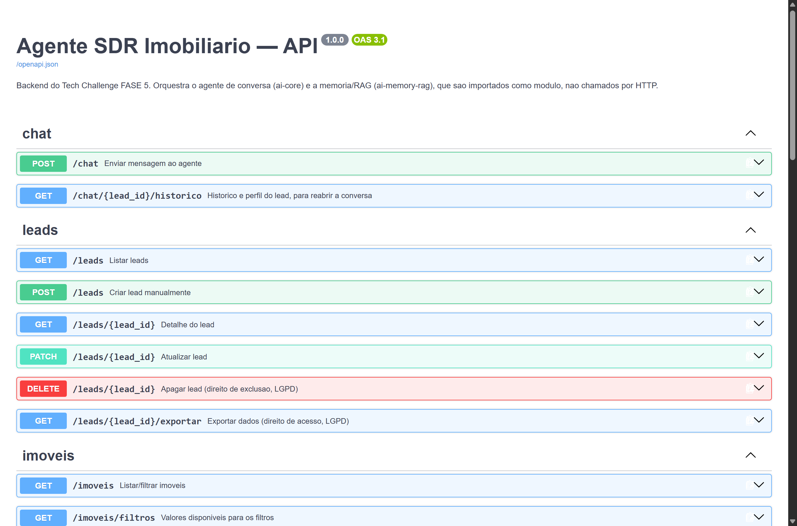
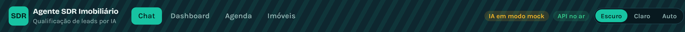
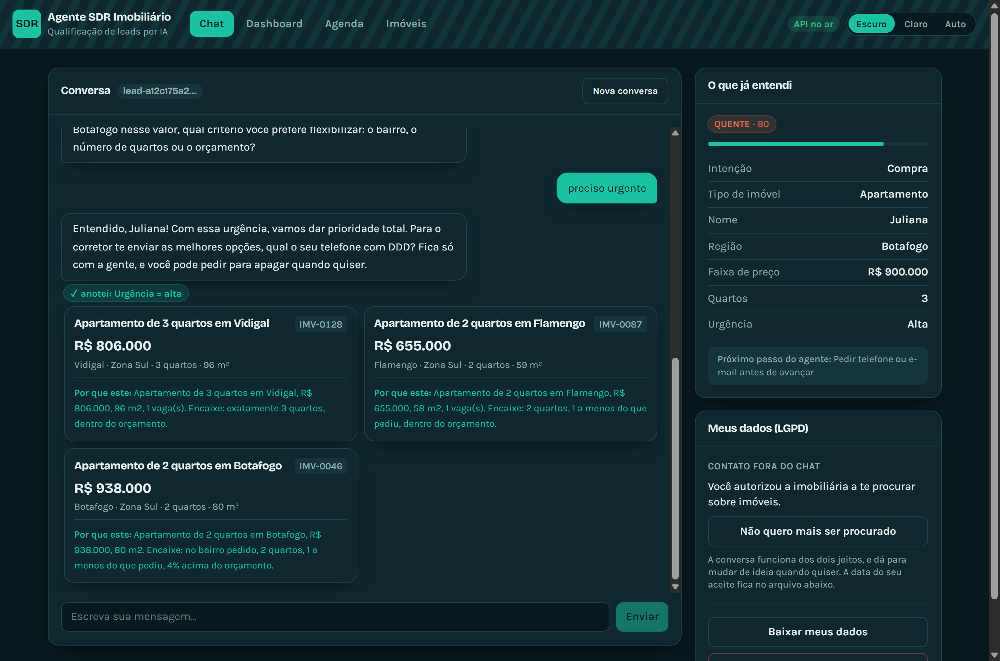
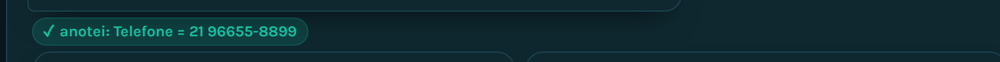
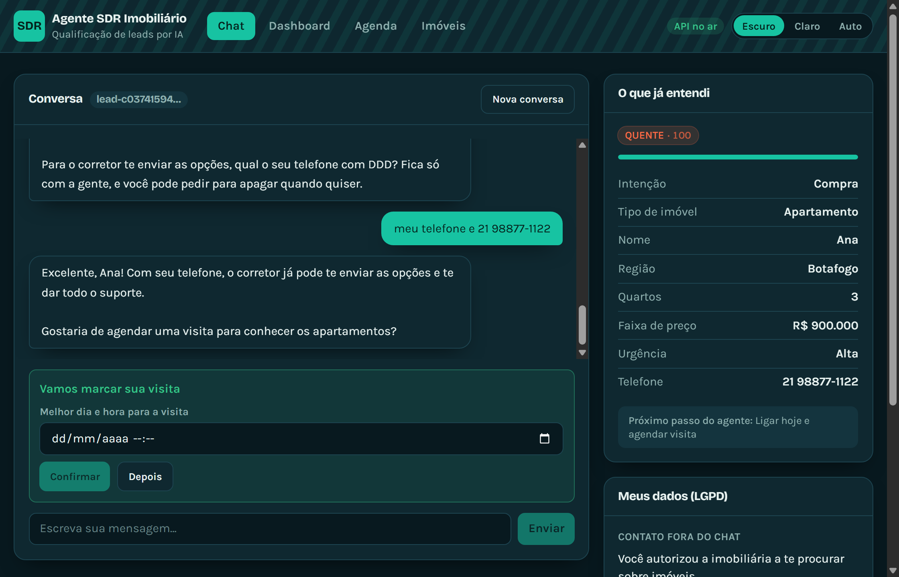
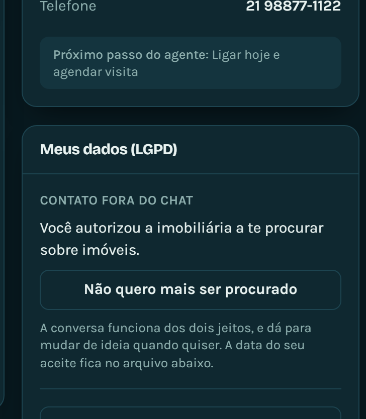

O sistema precisa de dois terminais abertos ao mesmo tempo. Um roda a API, outro roda a interface. Os dois ficam ocupados enquanto o sistema estiver no ar.
cd "D:\Projects\Pos\Fase 05\Tech-Challenge-FIAP-FASE5"
.venv\Scripts\python.exe backend\run.pyQuando dá certo, você vê algo próximo disto:
INFO: Uvicorn running on http://0.0.0.0:8000 (Press CTRL+C to quit)
INFO: Started server process [33756]
INFO: Application startup complete.
[followup] Ativo, a cada 30 min.
[api] Pronta. Docs em /docs
[rag] 140 imoveis indexados (gemini-embedding-001, cache).A última linha aparece alguns segundos depois das outras, porque o índice de busca é construído numa thread separada para não atrasar a subida da API. Três variações normais nela:
| O que aparece | O que significa |
|---|---|
(cache) | O índice veio do disco, sem custo. É o caso comum |
(rebuild) | Ele foi construído agora. Acontece na primeira execução e ao trocar de modelo de embedding |
hashing-v1 | Você está sem chave, e a busca usa o modo lexical. Funciona, com resultados um pouco menos precisos |
Abra um segundo PowerShell, sem fechar o primeiro.
cd "D:\Projects\Pos\Fase 05\Tech-Challenge-FIAP-FASE5\frontend"
npm run devQuando dá certo:
VITE v7.3.6 ready in 412 ms
-> Local: http://localhost:5173/
-> Network: use --host to expose| Endereço | O que é |
|---|---|
localhost:5173 | A aplicação. É aqui que você trabalha |
localhost:8000/docs | Documentação interativa da API, gerada pelo FastAPI |
localhost:8000/health | Diagnóstico em JSON do que está ligado |
O /docs vale uma visita durante a avaliação: ele lista todas
as rotas e deixa executar cada uma pelo navegador, sem precisar de ferramenta
externa.

/docs, com as rotas agrupadas por assunto. Cada uma abre e
pode ser executada ali mesmo.O Vite recusa subir se a porta já estiver em uso, e a mensagem é clara:
Error: Port 5173 is already in use. Quase sempre isso significa
que existe outro npm run dev rodando, de uma sessão anterior que
não foi fechada. Duas saídas:
# usar a outra porta ja liberada no CORS
npm run dev:3000ou encerrar o processo antigo:
Get-NetTCPConnection -LocalPort 5173 |
Select-Object -ExpandProperty OwningProcess |
ForEach-Object { Stop-Process -Id $_ -Force }Essas são as duas portas no CORS do backend. Qualquer outra precisa ser
acrescentada em CORS_ORIGINS no .env da raiz, e
sem isso toda chamada morre com um erro que não parece ser de porta.
--no-reload.venv\Scripts\python.exe backend\run.py --no-reloadO autoreload é ótimo enquanto se escreve código: ele reinicia a API sozinho a cada arquivo salvo. Na hora de apresentar ele atrapalha, por dois motivos. Primeiro, salvar um arquivo sem querer reinicia o backend no meio de uma frase do agente. Segundo, cada reinício paga uma consulta de sondagem ao serviço de embedding antes de responder a primeira mensagem.
O canto direito do cabeçalho carrega o estado do sistema, e ele se atualiza sozinho: a cada minuto quando está tudo bem, a cada dez segundos quando a API está fora. Você não precisa recarregar a página para ver o estado mudar.
| Selo | Cor | Significa |
|---|---|---|
| API no ar | verde | O backend respondeu |
| API offline | vermelho | O backend não respondeu. O terminal 1 caiu, ou nunca subiu |
| IA em modo mock | âmbar | As respostas vêm do agente simulado, não do Gemini |
| nenhum selo | cinza | Ainda verificando. Aparece por um instante no carregamento |
O selo âmbar de mock aparece junto com o verde de API no ar. Eles dizem coisas diferentes: um é sobre o backend estar respondendo, outro é sobre quem está escrevendo as respostas.

/health, que é o diagnóstico completoAbra http://localhost:8000/health no navegador:
{
"status": "ok",
"banco": "ok",
"database_url": "D:\\...\\backend\\data\\app.db",
"ia": {
"parte2": true,
"agente": "gemini",
"modo_configurado": "gemini",
"llm": "gemini-2.5-flash",
"rag": {
"carregado": true,
"imoveis": 140,
"embedder": "gemini-embedding-001",
"ultima_busca_ok": true
},
"detalhe": ""
}
}| Campo | O que diz |
|---|---|
status | A API está de pé |
banco | O banco respondeu a uma consulta de teste |
database_url | Qual arquivo de banco está em uso. Útil quando “sumiram os dados” |
ia.parte2 | Se a memória e o RAG foram importados com sucesso |
ia.agente | Quem respondeu o último turno de verdade |
ia.modo_configurado | O que foi configurado na subida |
ia.llm | O modelo em uso |
ia.rag.carregado | Se o índice de imóveis está em memória |
ia.rag.imoveis | Quantos imóveis foram indexados. Deve ser 140 |
ia.rag.embedder | gemini-embedding-001 com chave, hashing-v1 sem |
ia.rag.ultima_busca_ok | Se a última busca por imóvel funcionou. null antes da primeira |
ia.detalhe | Explicação em texto quando algo está degradado |
agente e modo_configuradoEsses dois campos existem por causa de um problema real: o modo era decidido uma vez, na subida, e nunca mais. Com chave inválida, projeto bloqueado ou cota estourada, o sistema continuava anunciando “gemini” enquanto todo turno era respondido pelo mock, e o selo do cabeçalho ficava verde mentindo.
Hoje, modo_configurado responde “o que eu tentei ser quando
subi”, e agente responde “o que eu consegui ser no último turno”.
Quando os dois divergem, o campo detalhe explica e o selo âmbar
aparece na tela.
A causa está entre chave inválida, projeto bloqueado e cota do dia
esgotada. O docs\verificar-chave.py da seção 3.6 diz qual das
três em menos de dois segundos.
Esta é a tela que um cliente da imobiliária veria. Ela tem seis elementos, e cada um mostra uma parte diferente do que o sistema está fazendo.

A coluna da esquerda. As mensagens do lead ficam à direita, em verde. As do agente ficam à esquerda, em cinza. Quando o agente está pensando, aparecem três pontinhos animados.
Quando a resposta veio do agente simulado, a bolha traz uma marca discreta escrita mock ao lado. A tela nunca esconde quem respondeu.
Logo abaixo de cada resposta do agente aparecem etiquetas verdes, uma por campo que a memória gravou naquele turno.

Elas são o principal ponto de observação de toda a demonstração, porque não dependem da redação da IA. Ou o campo foi extraído, ou não foi.
A coluna da direita, no alto. É o perfil do lead como o sistema o enxerga naquele instante, com os rótulos em português. Ele mostra também o status da qualificação, a nota e a temperatura.
Esses três números são os mesmos que o corretor vai ver no painel dele: não há cálculo diferente para as duas telas. E eles voltam preenchidos depois de um F5, o que é a prova de que a memória é do servidor, não da aba do navegador.
Quando o sistema já sabe o suficiente, ou seja, região, quartos ou faixa de preço, ele busca no catálogo de 140 imóveis e mostra até três sugestões abaixo da resposta.
Cada card traz o título, o bairro, o preço e, o que mais importa, o porquê daquela sugestão: quantos quartos, quanto do orçamento ocupa, e se a região ou o valor foram relaxados para achar alternativa.
Esse “porquê” é o que separa uma lista de imóveis de uma recomendação. Ele é montado pela Parte 2 a partir dos filtros que foram realmente aplicados, e não escrito pela IA, então ele é sempre verdadeiro em relação à busca.
Quando o perfil fica completo, o agente convida para agendar e um seletor de data aparece sozinho na tela, abaixo da conversa.

O agente nunca pergunta dia e hora por escrito. Quem resolve isso é o seletor. Se o agente perguntasse em texto, o lead escreveria uma data que não viraria agendamento nenhum, e teria que digitar tudo de novo no formulário.
O seletor recusa datas no passado, e os horários andam de trinta em trinta minutos. Se você clicar em Depois, ele fecha e não volta a abrir sozinho, para não insistir a cada turno.

| Controle | O que faz |
|---|---|
| Pode me procurar / Não quero mais ser procurado | Liga e desliga o follow-up automático, sem apagar a conversa |
| Baixar meus dados | Gera um JSON com tudo que o sistema guarda daquele lead |
| Excluir meus dados | Apaga o lead, as mensagens, os agendamentos e a memória da IA |
Repare que revogar o contato não pede confirmação, e excluir pede. Isso não é inconsistência. Uma caixa de diálogo no caminho de quem quer sair é atrito colocado de propósito, e é justamente o que a LGPD não admite. Já excluir é destrutivo e irreversível, então confirmar é proteger o usuário.